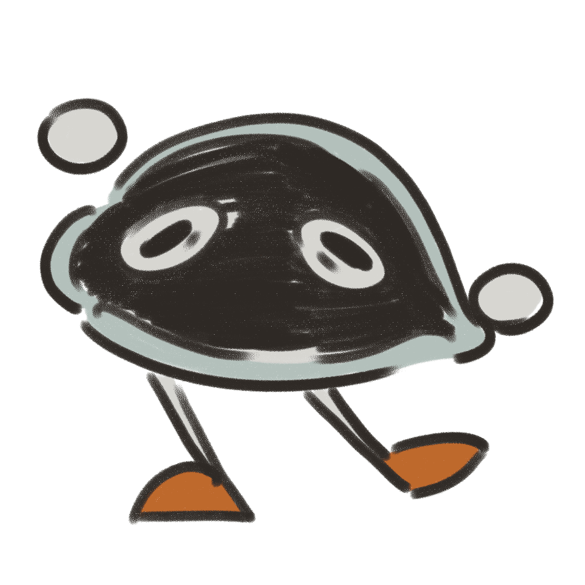

11 Million New Oysters in New York Harbor (but None for You to Eat) by Karen Zraick
An historical perspective on mollusks in Lower New York Harbor, with emphasis on oysters by Stephen A. Schwarzman Building
Making nature into infrastructure: The construction of oysters as a risk management solution in New York City by Stephanie Wakefield
